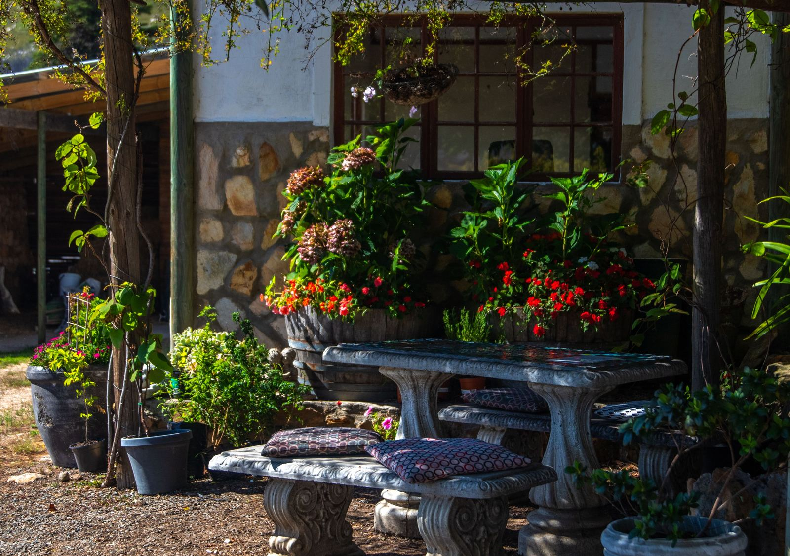
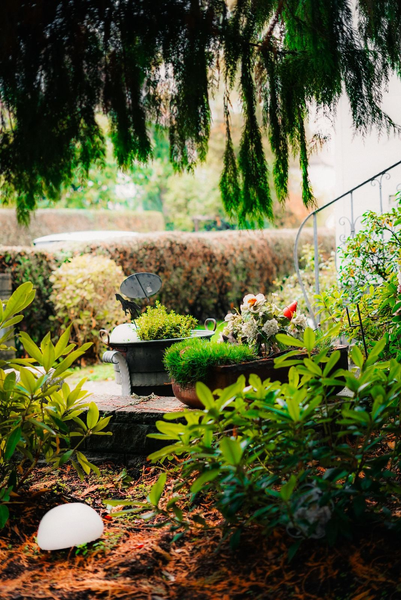
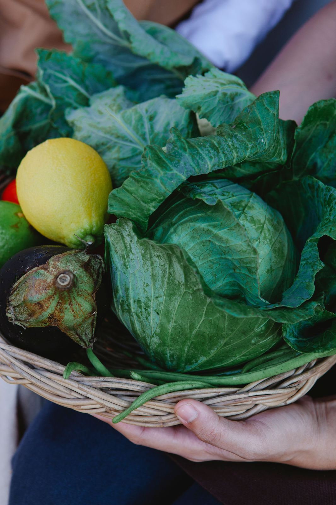
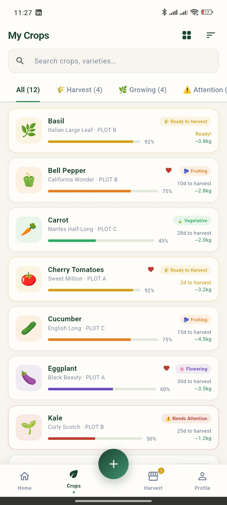
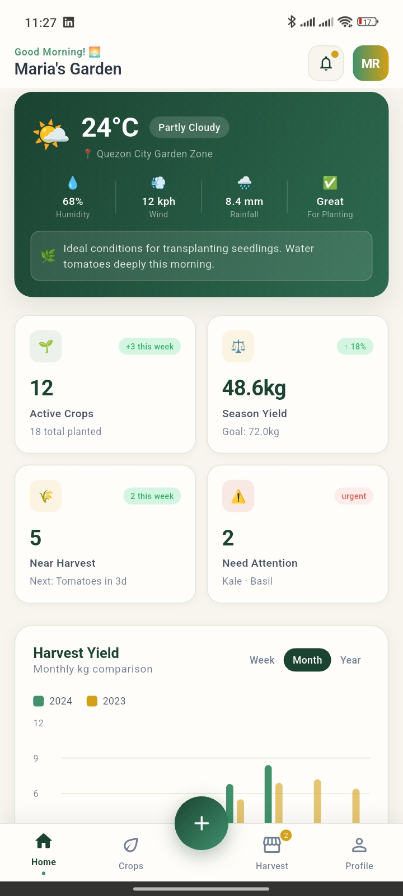
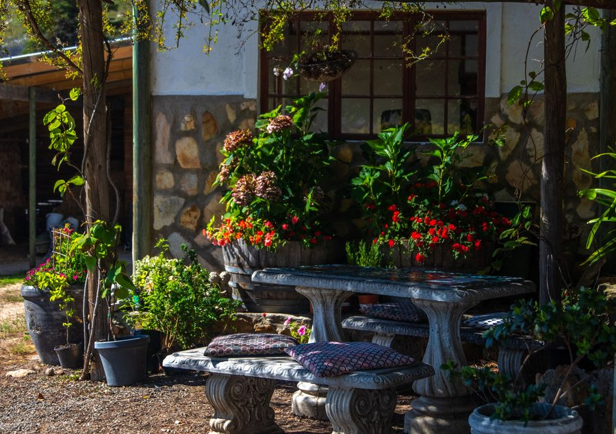
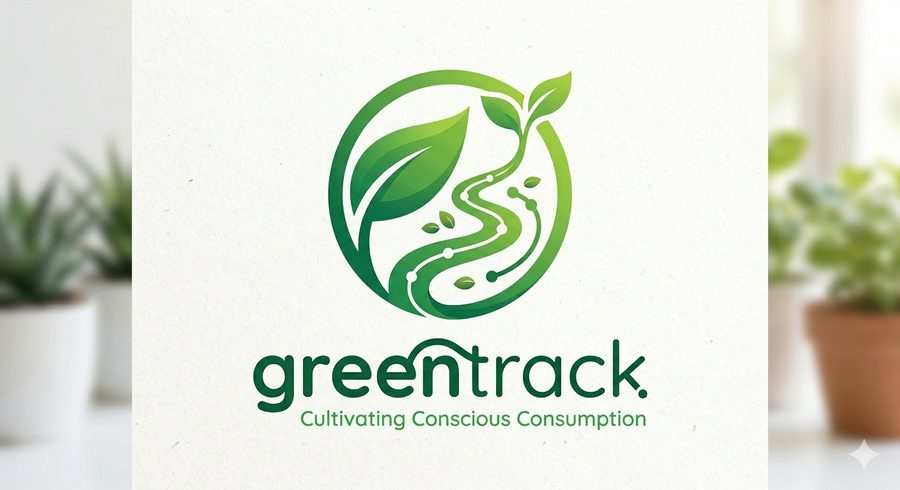
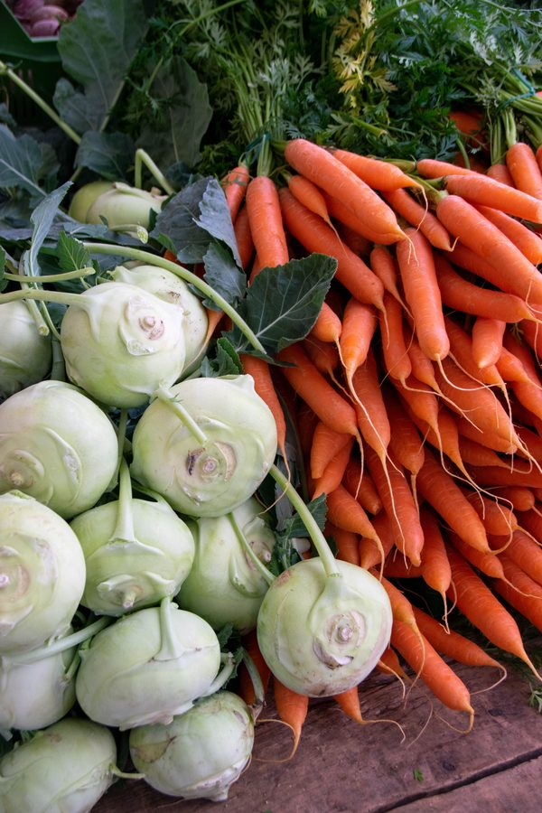
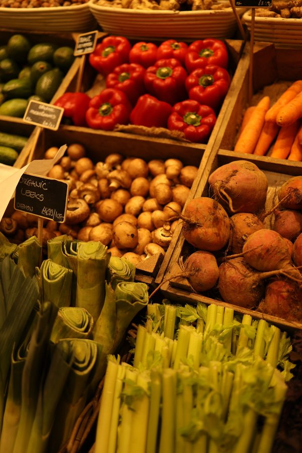
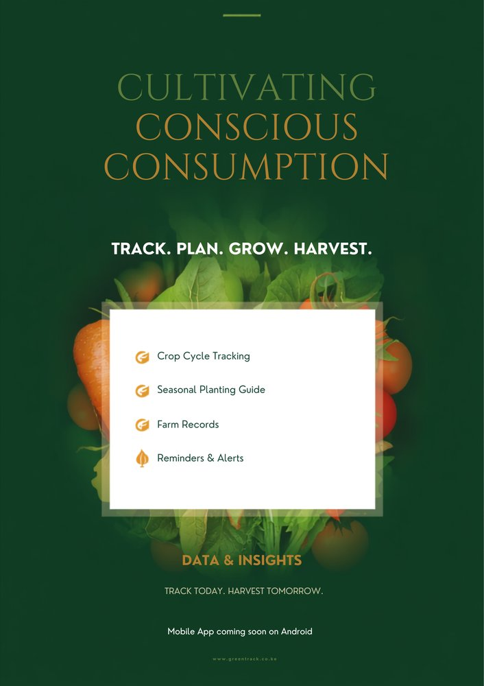

GreenTrack follows every crop from the day it's planted to the moment it's served — so growers manage their plots with precision, and everyone downstream knows exactly where their food came from.



Every scan on GreenTrack traces back to a real plot, a real grower, and a real harvest — here's a look at some of it.




Whether you're growing it or eating it, GreenTrack gives you the same source of truth.
Log plots, track irrigation, diagnose pests from a photo, and generate a verified batch tag the moment you harvest.
Explore grower toolsScan the tag on any pack, crate, or menu to see the farm it came from, when it was picked, and what's in it.
See how scanning works
Weather, watering, and yield all sit next to the crops themselves — so the next thing to do is always obvious.
Free for growers. Free for anyone scanning a tag. No account needed to verify a batch.
Scroll through for a peek at the crops, the harvests, and the campaign behind GreenTrack.

Five of us, building at Jomo Kenyatta University of Agriculture and Technology.